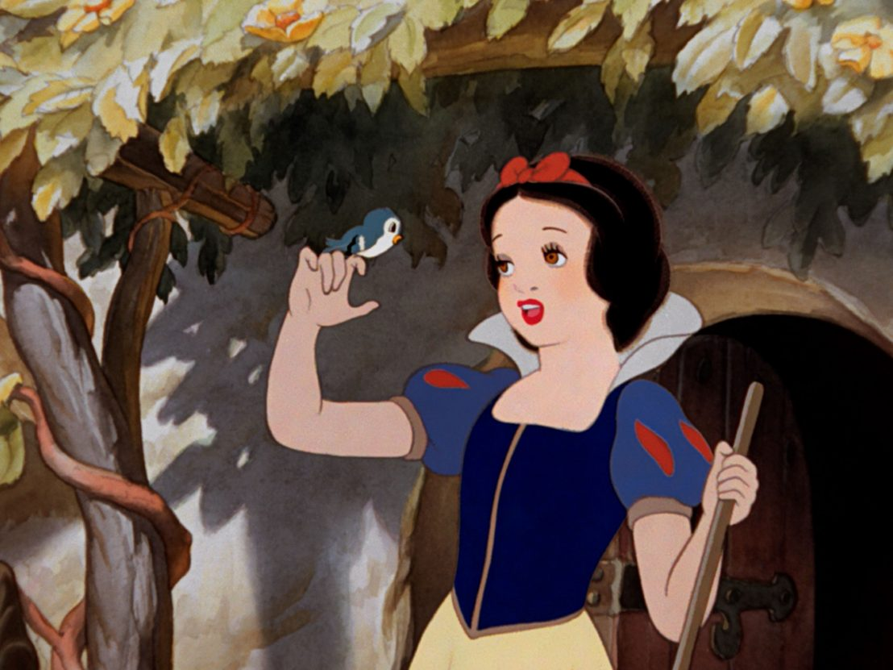
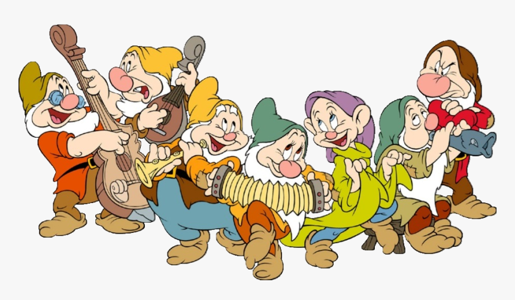

Snow White and the Seven Dwarfs
-

Snow White and the Seven Dwarfs became Disney's first feature animation.This movie has changed the way people think about animation.In the past, animation was nothing but children's entertainment, but since this time animation has come to be considered as a work of art.
-

The special effects animation by using multiplane camera,an invention which split animation artwork layers into several planes made animation vivid and ralistic.Snow White and the Seven Dwarfs have achieved unprecedented success. In 1999, it recorded record sales of $145,304,960.